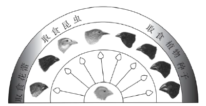

2022年北京市中考生物真题 · 选择题 第21、22、23、24、25题 · 对应解析
21. 中华白海豚是列入《中国水生野生动物保护蓝皮书》中的濒危物种，在分类上判断其为哺乳动物，主要依据是
A. 体内受精B. 用肺呼吸C. 胎生、哺乳D. 体温恒定
【答案】C
【解析】
【分析】哺乳动物的主要特征：体表面有毛；牙齿分化，体腔内有膈，心脏四腔，用肺呼吸；大脑发达，体温恒定，是恒温动物；哺乳胎生。
【详解】A．体内受精的不仅是哺乳动物，如爬行动物和鸟类都是体内受精，故不能通过体内受精判断中华白海豚属于哺乳动物，A不符合题意。
B．用肺呼吸的不仅是哺乳动物，如爬行动物和鸟类都用肺呼吸，故不能通过用肺呼吸判断中华白海豚属于哺乳动物，B不符合题意。
C．胎生、哺乳是哺乳动物特有 特征，C符合题意。
特征，C符合题意。
D．体温恒定的不仅是哺乳动物，鸟类的体温也恒定，故不能通过体温恒定判断中华白海豚属于哺乳动物，D不符合题意。
故选C。
22. 加拉帕戈斯群岛的不同小岛上生活的地雀种类存在差异。地雀喙型的进化过程如图。下列相关叙述错误的是

A. 多种地雀具有共同的祖先B. 地雀祖先存在喙型不同的变异
C. 喙型的进化与食物种类无关D. 喙型的进化是自然选择的结果
【答案】C
【解析】
【分析】达尔文认为：生物具有过度繁殖的倾向，而在自然界，生物赖以生存的食物和空间是非常有限的，这样就必然存在生存斗争；在生存斗争过程中，具有有利变异的个体，就容易生存，具有不利变异的个体，就被淘汰。适应环境的变异逐代遗传下去并得到积累和加强，经过长期的进化过程，形成了形态各异、食性和栖息场所也各不相同的地雀种群。
【详解】A．根据进化过程图可知，这些雀鸟来自于共同的原始祖先，由于食性不同，喙型的进化方向不同，A正确。
B．地雀喙的形状和大小有所区别，是地雀祖先存在喙型不同的变异，不同环境选择了不同的喙型的结果，B正确。
C．喙型的进化是自然选择的结果，而食物种类作为自然环境条件对各种喙型进行选择，故喙型的进化与食物种类有关，且喙型与食性是相适应的，C错误。
D．结合分析可知，喙型的进化是长期自然选择的结果，环境中的食物因素决定了雀鸟喙的进化方向，D正确。
故选C。
23. 水痘是由水痘--带状疱疹病毒引起的，可通过注射水痘疫苗进行预防。下列相关叙述错误的是
A. 该病毒是引发水痘的病原体B. 水痘疫苗起到抗原的作用
C. 水痘疫苗刺激机体产生抗体D. 该过程属于非特异性免疫
【答案】D
【解析】
【分析】病原体是引起传染病的细菌、病毒、寄生虫等生物。抗原：能引起淋巴细胞产生抗体的物质。抗原包括进入人体的微生物等病原体、异物、异体器官等。特异性免疫（又称后天性免疫）：出生后才产生的，只针对某一特定的病原体或异物起作用。通过注射疫苗获得的免疫力属于特异性免疫。
【详解】A．病原体是引起传染病的细菌、病毒、寄生虫等生物。带状疱疹病毒是引发水痘的病原体，A正确。
B．抗原：能引起淋巴细胞产生抗体的物质。抗原包括进入人体的微生物等病原体、异物、异体器官等。水痘疫苗起到抗原的作用，B正确。
C．病原体侵入人体后，刺激了淋巴细胞，使其产生了一种抵抗该病原体的特殊蛋白质，叫抗体。因此，水痘疫苗刺激机体产生抗体 ，C正确。
D．特异性免疫（又称后天性免疫）：出生后才产生的，只针对某一特定的病原体或异物起作用。通过注射疫苗获得的免疫力属于特异性免疫。因此，注射水痘疫苗预防水痘的过程属于特异性免疫，D错误。
故选D。
24. 下列食品制作过程中没有应用发酵技术的是
A. 酸奶B. 米酒C. 腐乳D. 绿豆汤
【答案】D
【解析】
【分析】发酵技术是指利用微生物的发酵作用，运用一些技术手段控制发酵过程，大规模的生产发酵产品的技术，据此解答。
【详解】A．制酸奶和泡菜要用到乳酸菌，A错误。
B．制馒头、做面包、酿酒等要用到酵母菌，B错误。
C．制腐乳要用到霉菌，C错误。
D．绿豆汤是用绿豆加水，加热而成的，与发酵无关，D正确。
故选D。
25. 北京冬奥会践行“绿色奥运”理念，实现了碳中和，即二氧化碳等温室气体的排放和消耗之间达到平衡。下列做法能够消耗大气中二氧化碳的是
A. 植树造林B. 建筑材料回收利用
C. 风能发电D. 倡导绿色出行方式
【答案】A
【解析】
【分析】碳中和是在一定时间内直接或间接产生的温室气体排放总量，通过植树造林、节能减排等形式，以抵消自身产生的二氧化碳排放量，实现二氧化碳“零排放”，要合理使用化石燃料，改用清洁型新能源。
【详解】A．植树造林使森林覆盖率增加，植物的光合作用能吸收二氧化碳，释放氧气，A符合题意。
B．建筑材料回收利用能节约资源，提高资源利用率，减少资源的浪费，但不能消耗大气中二氧化碳，B不符合题意。
C．风能发电能减少二氧化碳的产生，不能消耗大气中二氧化碳，C不符合题意。
D．倡导绿色出行方式能减少二氧化碳的产生，不能消耗大气中二氧化碳，D不符合题意。
故选A。
二、非选择题（本大题共7小题，共45分）